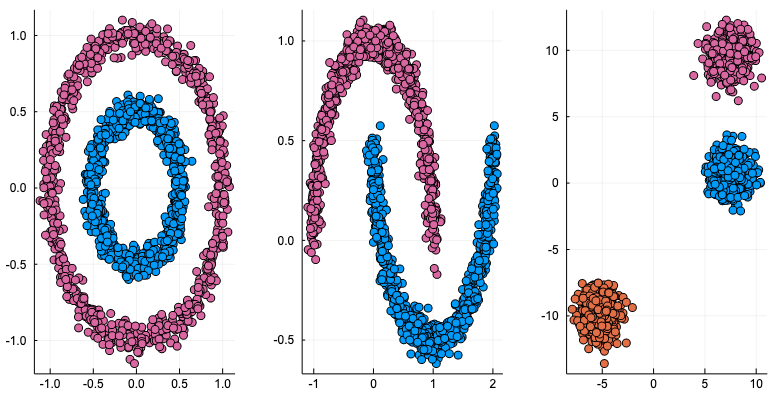
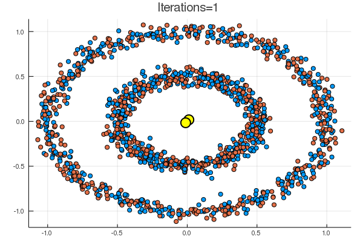
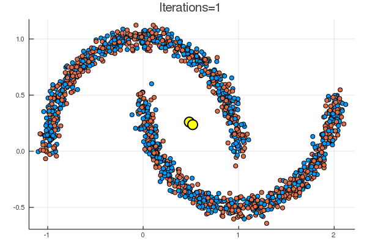
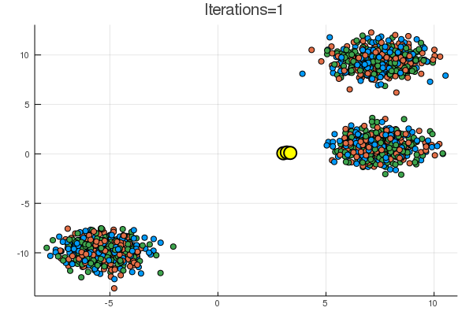
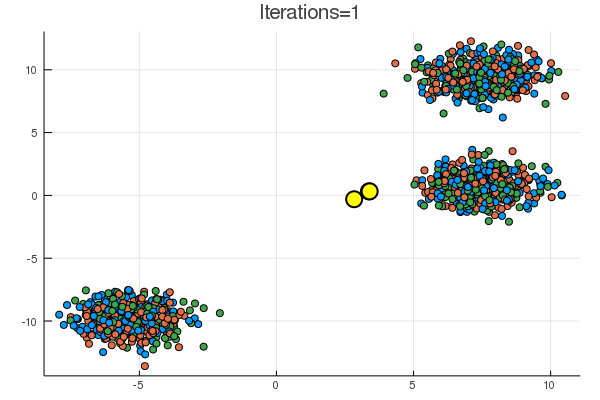

最近なかなか統計モデルに取り組む時間が十分捻出できていないが、「ノンパラメトリックベイズ 点過程と統計的機械学習の数理」に入門を開始した。
ノンパラベイズに到達する前のデータ点をクラスに分類するクラスタリングの段階で出てきた、-平均アルゴリズム(Wikipedia) を実装したので記録。使っているのはいつものようにJulia。
-平均アルゴリズムではすでにクラス数 は given として計算を進めていく。実装したアルゴリズムは本を参考にして下のようにした。
データ点を , クラスタリングにより決定される、 各クラスを代表する点を とする。
各データ点 が属するクラスを とすると、 -平均法では、 各データ点は のなかで一番(平方ユークリッド)距離が近い点が代表するクラスに分類されるので、
となる。
アルゴリズムは、目的関数
が最小となるように を更新していく。
アルゴリズム
- を乱数を用いて初期化する。集合 の個数が ではない場合、個数が になるまで を乱数を用いて再初期化する
- と代表点の更新を行う
- 以下のアルゴリズムを、 を更新することによる目的関数 の減少が閾値以下になるまで繰り返す
- とラベリングの更新を行う
- 集合 の個数が ではない場合(=分類されるクラスが減少してしまった場合)、最初に戻って の初期化からやり直す
代表点の位置によっては分類されたクラスの数が当初設定した より小さくなってしまうことがあり、
そのまま計算を行うと、 のいずれかが NaN になって計算できないので、
を置き換えるか、ラベルを振り直すというのがすぐに思いつく方法だが、今回は後者の方法を採用した。
使ったデータは ScikitLearn.jl で作成。
下の図のような三種類のパターン (noisy_circles, noisy_moons, blobs) を用意して、サンプル点は1500個。
このページ が参考になる。
using ScikitLearn
using Statistics
using Plots
using Printf
using Random
@sk_import datasets: (make_circles, make_moons, make_blobs)
n_samples = 1500
noisy_circles = make_circles(n_samples=n_samples,
factor=.5, noise=.05)
noisy_moons = make_moons(n_samples=n_samples, noise=.05)
blobs = make_blobs(n_samples=n_samples, random_state=8)
plts = []
for data in [noisy_circles, noisy_moons, blobs]
points, label = data
push!(plts, scatter(points[:, 1], points[:, 2],
label="", mc=label))
end
Plots.plot(plts..., layout = (1, 3), size = [800, 400])

本体の実装はこんな感じで、dist で の値、 dist_change で の変化を保持。
mutable struct KMean
points::Array{Float64}
K::Int64
zs::Vector{Int64}
μs::Array{Float64}
dist::Float64
dist_change::Float64
end
function KMean(points::Array{Float64}, K::Int64)
n_points = size(points, 1)
init_zs = nothing
while true
init_zs = rand(1:K, n_points)
if Base.length(Set(init_zs)) == K
break
end
end
zs = init_zs
kmean = KMean(points, K, zs,
zeros(1, size(points, 2), K), 0, typemax(Float64))
update_μs!(kmean)
kmean
end
function update_μs!(km::KMean)
km.μs = cat([mean(km.points[km.zs .== i, :], dims=1) for i in 1:km.K]..., dims=3)
new_dist = sum((km.points - reshape(km.μs[:, :, km.zs], 2, :)').^2)
km.dist_change = km.dist - new_dist
km.dist = new_dist
km
end
function update_zs!(km::KMean)
norms = sum((km.points .- km.μs).^2, dims=2)
argmin_norms = [x[3] for x in argmin(norms, dims=3)][:]
while true
if Base.length(Set(argmin_norms)) == km.K
break
end
argmin_norms = rand(1:km.K, size(km.points, 1))
end
km.zs = argmin_norms
km
end
function update!(km::KMean)
update_zs!(km)
update_μs!(km)
km
end
それぞれのサンプルデータに対し、 の減少幅が0.1以下になるまでイテレーションを行う(最高100回)様子をアニメーションして、gifファイルに出力させると下のようになる。 Juliaはgifのアニメーションを作るのも楽でいいですね。
gifs = []
for (i, (data, K)) in enumerate(zip([noisy_circles, noisy_moons, blobs], [2, 2, 3]))
points, label = data
km = KMean(points, K)
anim = @animate for n=1:100
if abs(km.dist_change) < 0.01
break
end
scatter(km.points[:, 1], km.points[:, 2], mc=km.zs, label="")
plt = scatter!(km.μs[1, 1, :], km.μs[1, 2, :], ms=8, mc=:yellow, msw=3, label="",
title=@sprintf("Iterations=%d", n))
update!(km)
plt
end
push!(gifs, gif(anim, @sprintf("clustering-kmean_%d.gif", i), fps = 1))
end
display.(gifs);
結果は下の通り。黄色の点が、 に該当。
noisy_circles と noisy_moons では次のような結果で、
代表点からの距離でクラスタリングするならばまあそうなるだろう、という結果。


blobs では一見うまくいくように見えるが、

乱数による初期化次第で、下のように期待とは違う場所に収束することも起こり得る。

次は混合ガウスモデルのギブスサンプリングかな。無限次元への扉は遠い…
Jupyter Notebook (アニメーションは表示されない):
https://github.com/matsueushi/notebook_blog/blob/master/clustering.ipynb